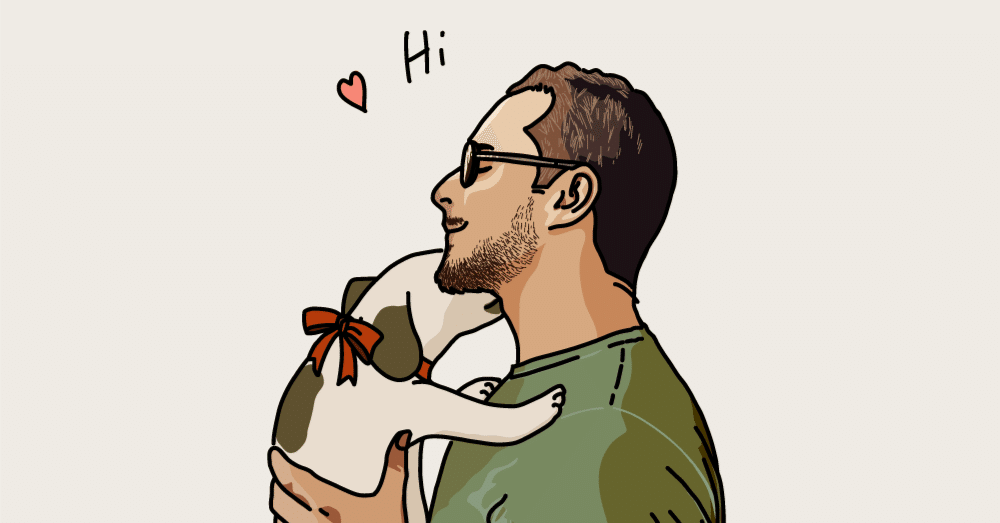

またしても、大変誤解を招きそうだ。
何がって？この記事のタイトルのことぉ！
大学時代、同じゼミのギャルっぽい女の子から“お父さん”と呼ばれていた。
決して勘違いしてほしくないことだが、断じてパパ活の相手をしていたわけではないし、これからもそんなことをするつもりは毛頭ない。理由は忘れてしまったが、ひょんなことからその子の就活相談に乗り、気づいたら“お父さん”と呼ばれていた。
僕は1浪していたので、現役入学であるその子にとっては確かに年上ではあるが、せいぜいひとつ違いだ。
｢僕は決して、君のお父さんではなぁぁい！｣
本来であれば、可愛い娘が彼氏を連れてきた時にその男が距離感を縮めようとするものの、父親がそれを許さない時に放つセリフだというのに。もちろん彼女にはそんなことは言えず、僕は“お父さん”として最後までその子の就活相談に乗っていたのだ。
“お父さん”エピソードはこれだけではない。
僕には大学時代の先輩で仲良くしている人が2人いるのだが、彼らにも｢自分の父親に似てて憎めない｣（※もしかしたら、「憎めない」とは言ってなかったかも）と何度か言われたことがある。どうやら、僕の前世は“お父さん”で間違いないようだ。
そういえば、あれは社会人1年目の時。同期と臨んだ半年にも及ぶ新人研修の最後に、ある先輩が｢海人君は、まるでTOKIOの城島君みたいに他の子のことをずっと見守ってきました｣と言って大爆笑を取っていた。
城島君といえば、TOKIOの最年長でありリーダー。そんな立場でありながらも他のメンバーを優しい眼差しで見守っている姿が印象的だ。
そうか。今まで気づいていなかっただけで、僕の本当の正体は城島君だったのか…なんて思ったが、
｢僕は何一つ楽器なんてできないからTOKIOの中で浮いちゃうよ！｣
などと訳の分からん反論をすることもなく、有難い先輩の一言に周りと同じように笑っていた。
自分って老けてるのか？
それはもちろん性格的にだ。とどのつまり、この年にして達観してしまっているということなのか？まだ20代だというのに。は、早くない？（戸惑い）
個人的にはそんなことはないと信じたい。
日課のジョギングではかつて若者の代名詞だった尾崎豊を聴きながら走ることもある、この僕が…！お、お父さんだったなんて！ぜ、絶対に信じないからね！
とか言いつつも、今まで語ってきたそれらには決して侮辱や馬鹿にしたニュアンスは一切含まれていないことも知っていたりする（もしネガティブな意味合いがあるのなら、僕は一生それに気づけそうにない）。
だから、もし需要さえあれば、僕はこれからもみんなにとっての“お父さん”であり、TOKIOの城島君でありたい。それでみんなが笑顔になるというのなら、僕は進んで“お父さん”兼城島君になってみせるんだ！
…あっ、そこ！｢さっきから何を言っているんだ、こいつは？｣とか言わない！